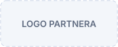

ISAT-Holding
Jeden informačný systém pre riadenie celej farmy
Komplexné softvérové riešenie pre poľnohospodárske podniky a družstvá. Prepája agroevidenciu, mapy, kataster, výrobu, sklady, dochádzku a ďalšie činnosti na podniku do jedného systému.
Pozemky, výroba aj ľudia. Majte prehľad o svojom podniku.
ISAT-Holding prepája agronomickú evidenciu, pracovné výkazy, dochádzku, mapy, skladové hospodárstvo a váženie. Vyberiete si moduly podľa potrieb svojej farmy, družstva alebo skupiny podnikov. Keď sa vaše potreby zmenia, môžete systém doplniť o ďalšie moduly.
Rozumieme softvéru aj poľnohospodárstvu
Od roku 2005 vyvíjame softvérové riešenia a poskytujeme odbornú a technickú podporu pre klientov – nielen v poľnohospodárstve.
Novinky z ISAT
[DÁTUM][NADPIS AKTUALITY] [DÁTUM][NADPIS AKTUALITY] [DÁTUM][NADPIS AKTUALITY] Všetky aktualityNeviete, aké moduly potrebujete?
Ozvite sa nám a dohodneme si bezplatnú prezentáciu systému ISAT-Holding.
Naši partneri
Spolupracujeme s partnermi, ktorí dopĺňajú naše riešenia.

Vybraní klienti
ISAT-Holding používajú podniky a družstvá po celom Slovensku.